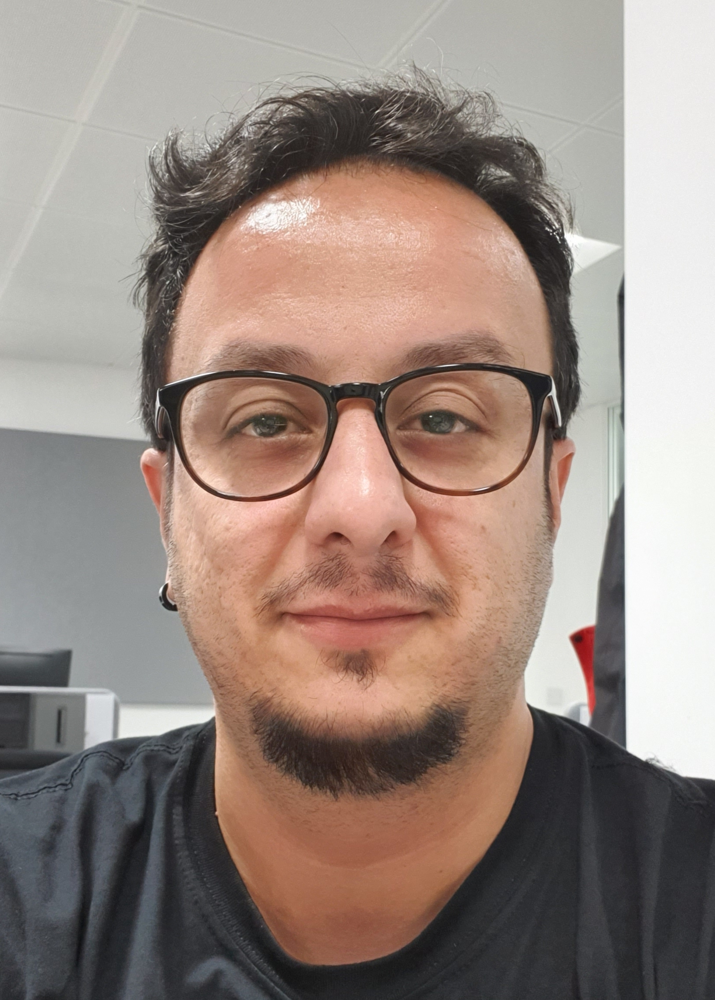

Dr Oktay Karakus
Research Associate
1.23, One Cathedral Square, University of Bristol
Bristol, BS1 5DD, UK
o.karakus*at*bristol.ac.uk


About
I am a Research Associate at the University of Bristol, and a member of the Visual Information Laboratory and the Bristol Vision Institute, which are led by Prof. David Bull. I received my BSc degree in electronics engineering (with Honours) from Istanbul Kültür University, Turkey in 2009. Then, I received my MSc and PhD degrees in electronics and communication engineering from İzmir Institute of Technology (IZTECH), Turkey, in 2012 and 2018, respectively. I am now with the Department of Electrical \& Electronic Engineering at the University of Bristol, and currently working in an Engineering and Physical Sciences Research Council (EPSRC) project titled assessment of sea surface signatures for naval platforms using SAR imagery (AssenSAR) which is led by Prof. Alin Achim. I have co-authored over 30 scientific publications, and a member of IEEE and IEEE Signal Processing Society.Personal Interests
Research Interests
- Bayesian Data Analysis
- Statistical Signal/Image Processing
- Markov chain Monte Carlo Methods
- Inverse problems
- Convex/Non-Convex Optimisation
- Remote sensing
- Medical imaging
- Uncertainty Quantification
- Nonlinear Time Series Modelling
Publications
For all my papers, see both google scholar and university siteRecent papers
- Convergence guarantees for non-convex optimi-sation with Cauchy-based penalties. O. Karakus, P. Mayo, and A. Achim. IEEE Transactions on Signal Processing. 2020.
[ PDF] [CODE] - Detection of Line Artefacts in Lung Ultrasound Images of COVID-19 Patients via Non-Convex Regularization. O. Karakuş, N. Anantrasirichai, A. Aguersif, S. Silva, A. Basarab and A Achim. IEEE Transactions on Ultrasonics, Ferroelectrics, and Frequency Control. 2020.
[ PDF] [ BibTeX] [CODE] - The Application of Convolutional Neural Networks to Detect Slow, Sustained Deformation in InSAR Timeseries. N. Anantrasirichai, J. Biggs, F. Albino, and David Bull. Geophysical Research Letters. 2019.
[ PDF] [ BibTeX] [Project] - A Deep Learning Approach to Detecting Volcano Deformation from Satellite Imagery using Synthetic Datasets. N. Anantrasirichai, J. Biggs, F. Albino, and David Bull. Remote Sensing of Environment. 2019.
[ PDF] [ BibTeX] [Project] - DefectNET: multi-class fault detection on highly-imbalanced datasets. N. Anantrasirichai and David Bull. In Proceedings of the IEEE International Conference on Image Processing. 2019.
[ PDF] [ BibTeX] [ CODE] [Project] - Regularisation With a Dictionary of Lines for Medical Ultrasound Image Deconvolution. N. Anantrasirichai, M. Allinovi, W. Hayes, A. Achim. In Proceedings of the IEEE International Symposium on Biomedical Imaging. 2019.
[ PDF] [ BibTeX] [Project]